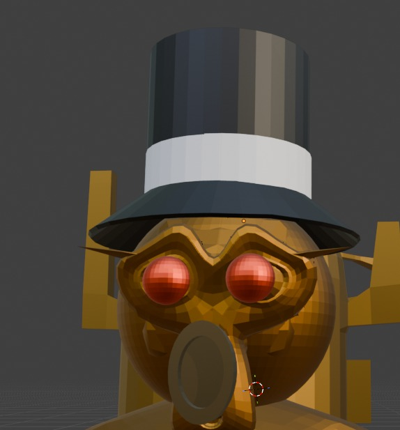

Inspirado en la oscura ambición de los barones del estaño de principios del siglo XX, Patiño comenzó como un magnate minero obsesionado con acumular riqueza y dominar las venas de la Tierra. Su codicia lo llevó a descender a lo más profundo del subsuelo para sellar un pacto prohibido con El Tío de la mina. A cambio de poder absoluto, reemplazó sus órganos internos por maquinaria pesada y calderas vivientes, transformándose en un cyborg impulsado por vapor que viste un traje elegante chorreando grasa negra, con chimeneas en su cabeza que expulsan gases tóxicos y ojos que arden como carbones encendidos.
Hoy en día, este titán eterno utiliza su inmenso poder para comprar las almas de los soldados caídos en combate y convertirlos en autómatas mineros que trabajan sin descanso en sus dominios. En el campo de batalla es un estratega letal que controla masas enteras: es capaz de invocar rieles de trenes subterráneos que brotan del suelo para atropellar a sus enemigos, lanzar ráfagas de humo denso que ciegan por completo el lugar y arrojar dinamita fundida con estaño líquido que inmoviliza por completo a sus rivales en cuanto se enfría.
